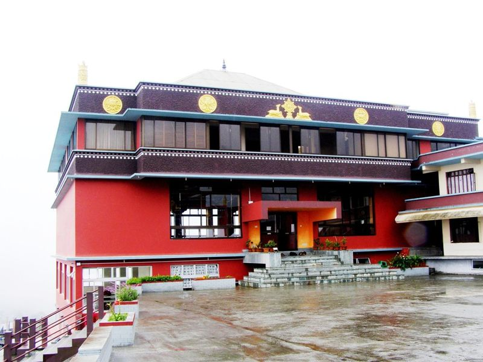

Lava is a small hamlet situated 34 kilometres (21 mi) east of the town of Kalimpong via Algarah in Darjeeling district of the state of West Bengal, India. Lava is situated at an altitude of 7,016 feet (2,138 m). It is one of the few places in West Bengal to receive snow in winter. It is the entry point to the Neora Valley National Park from Kalimpong. The route to Lava is scenic with the change in vegetation from tropical deciduous to the wet alpine trees of fir, pine and birch. The verdant forests are a popular spot for picnicking, trekking and bird-watching. Lava has now become a favorite tourist destination for people living on the coast of West Bengal, and tourism has become the source of living for the inhabitants.

Many small guest houses and lodges has been built including log houses or small huts built in the midst of the forest which a tourist can rent to experience the wildlife and a famous spot to view the sunrise. Another tourist destination near Lava is Rishyap ust 4 km walking pathway with a view of Himalayan peaks. Wild animals such as the Himalayan Black Bear and barking deer are found in these parts. A Buddhist monastery is present on one of the hills of Lava. Notable sites include Changey Waterfalls and Lava Jamgyong Kongtrul Monastery.